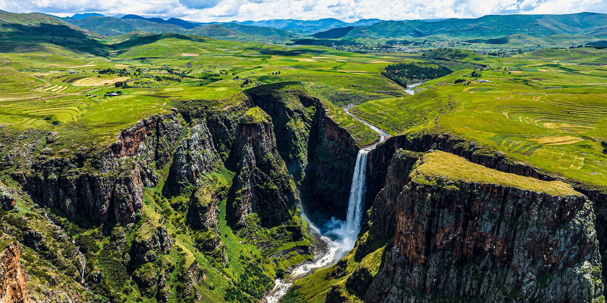
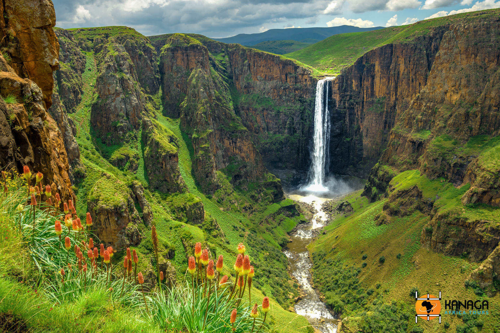
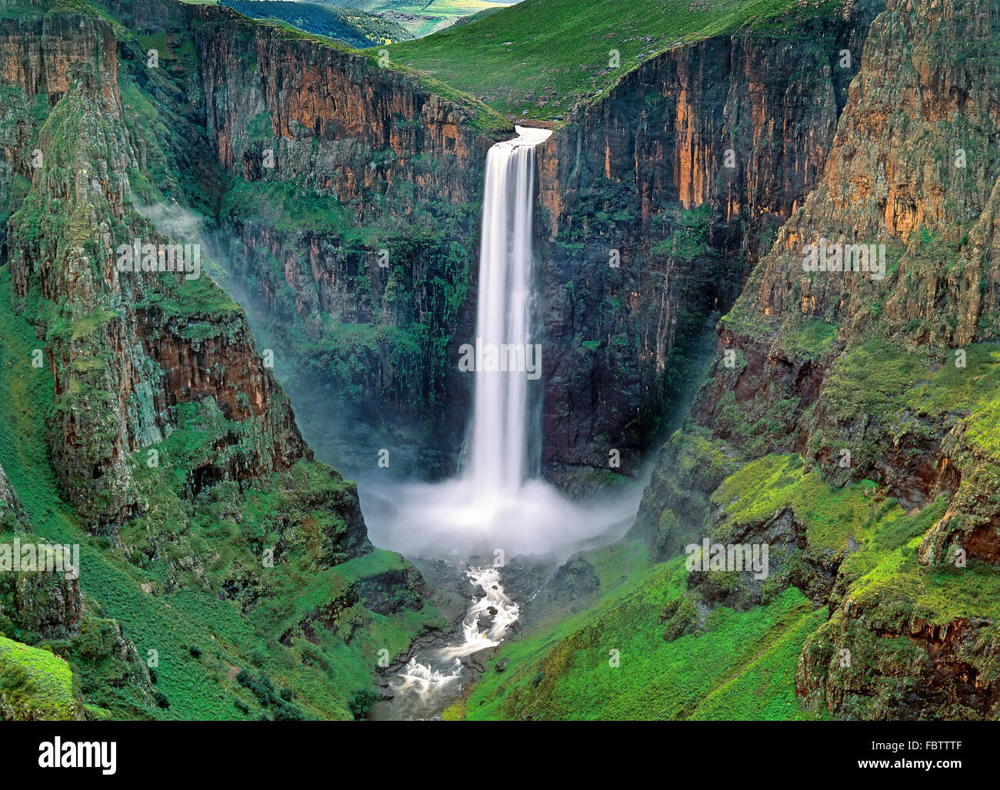

Welcome to Maletsunyane fall, ((A stunning waterfall located in the Southern Africa country of Lesotho))
The site is considered one of the highest single-drop waterfalls in Africa

It is 192-metre-high waterfall dropping into a gorge

It falls from a ledge of Triassic-Jurassic basalt.

The plunging water creates a reverberating echo when it contact the basin of the falls